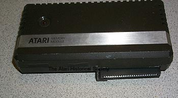

Memory Module

The Atari 1064 was the only released Parallel Bus Interface (PBI) product
for the Atari XL line of computers by Atari. Other produts
such as the Atari 1090XL Expansion system and the rumored Parallel Bus
disk drive were never released. The Atari 1064 module gave
an Atari 600XL computer an additional 64K of memory (for a total of 80K).
The Atari 1064 memory modules interface will only fit into an Atari 600XL,
the Atari 800XL, 1400XL and 1450XLD computers have ports which would be
blocked by the memory module. It is assumed that Atari engineers
purposely designed it in just this particular way to aviod its use on any
other system other then the Atari 600XL. The module does have
a passthrough port on the back of it, so additional memory modules and
other Parallel Bus Interface (PBI) devices could have been daisy chained
to the back of it.

This is the original prototype of the Atari 1064 memory module. Inside is a wire-wrapped prototype board. The casing as you can see from the above image is an all brown color. Perhaps Atari had originally intended the new XL line of computer to be completely brown in color or brown was to be a dominant color in the case designs of its components. The Atari Historical Society will contact several of the Industrial Designers who had worked on the XL line of cases to find out what the answer is to that question. The above module actually says "ATARI MEMORY MODULE", the completed and released versions simple say "ATARI 1064" on them. Also there is an LED on the prototype case. The LED is non-functional and appears to have been to there for cosmetic purposes only.